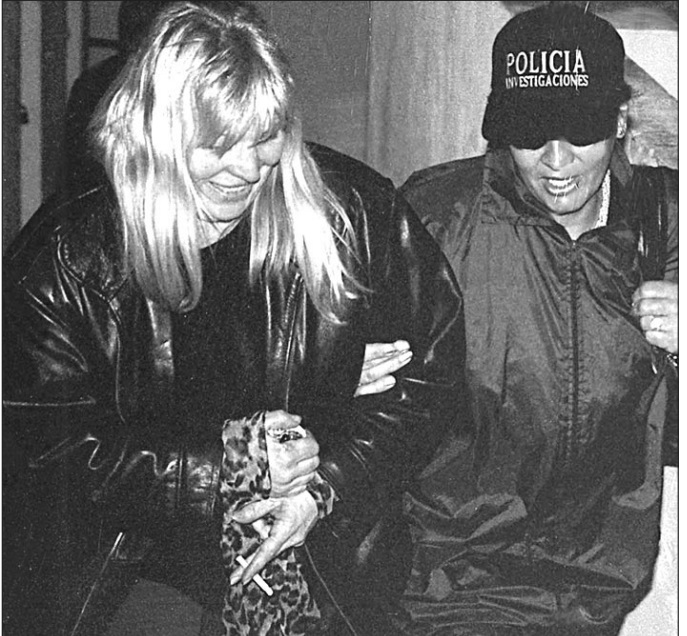
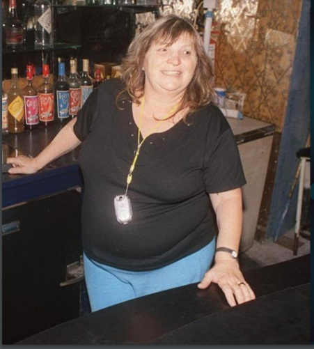

Vida y leyenda de una mujer dura
—¿Saben bien quién soy? No, no saben una mierda. Tomá ¡Pum! Soy Margarita Graciana Di Tullio. Me pusieron el apodo de Pepita La Pistolera unos periodistas pelotudos hace no sé cuántos años porque maté a tres tipos que se metieron adentro de mi casa. Los maté porque si no ellos me mataban a mí, a mis hijos, a mi marido, me violaban a La Polaca, a la Pato. Podrían haber hecho un desastre. Muy poronga que era el Tarta, ahí lo tenés. Todos saben quién era el Tarta Lozada, así que no se la vengan a dar de vigilantes conmigo. Tomá vos también ¡Pum! A la Justicia le costó entenderlo, pero al final se dio cuenta que yo tenía razón. Así que, manga de conchudos de mierda, no rompan las bolas con eso de que yo soy una pistolera. Querían una pistolera, tomen acá tienen ¡pum, pum, pum! Acá tenés una pistolera. Vos sos uno más de ellos, de los que dijeron que yo andaba a los tiros por ahí, que era una gorda grasa y asesina. ¿Qué saben de mi vida? No saben nada. Vos sos periodista también y seguro sos un garca. Eso de que querés contar la verdad no te la crees ni vos. Lo que querés es cobrar por mi verdad. Querés agarrar cuatro o cinco anécdotas de esas que averiguaste y con eso hacer un libro. Vos andabas por mis cabarets, yo te conozco. No te hagas el gil. ¿Querés contar la verdad? Contala, pero no tenés huevos. Además. No sabés nada de mí.
Me despierto casi alcanzado por la saliva de Margarita en my cara. Porque la escena era así: Margarita, en su rol de Pepita, no de Marga, no de la Gorda, no de la Tana, no de La Di Tullio, no de madre, no de hija, no de madama, no de vecina, de Pepita, acusándome, a medio metro de distancia, de que no tenía el coraje para poner en un libro todo lo que sabía de ella. Yo estaba en una silla y en forma de semicírculo había otros periodistas. También, vaya a saber por qué, ocupaba una silla mi amigo Ramiro que dedicó toda su vida a vender cosas mucho más rentables que noticias como imanes para las heladeras o velas de gel. Ella, con sombrero de cowboy marrón, como si se tratara de una bandolera de Nuevo México, en el centro de esa medialuna de pusilánimes blandía un revólver plateado y nos eliminaba uno a uno. El ruido de la detonación no salía del revólver sino de la boca ancha de Margarita Di Tullio. Del revólver, no cabían dudas, salían balas.

Cuando Margarita Di Tullio, la última versión de ella, esa mujer avejentada, gorda y de flequillo rubio de las que quedan algunas fotografías, se me acercó volvió a ser Pepita. Ahí me lanzó todo el discurso también encañonó a mi amigo Ramiro. Sobresaltado me desperté.
Puede entenderse como un comienzo trillado el de los sueños reveladores. Es el recurso rechazado por los críticos, pero amado por los lectores ingenuos o espectadores holgazanes. Al escritor se le hace difícil usarlo porque lo considera cursi, ordinario, forzado, aun cuando el sueño le haya sucedido y fuera revelador en extremo. Entonces, al momento de empezar, se humilla con una falsedad. Se transforma en esclavo de la mirada ajena y miente. No es mi caso. El sueño ocurrió y fue su consistencia, su textura, su perdurabilidad más allá del despertar, sus imágenes en Alta Definición, el picor en mi cara –sorprendentemente real- con cada gota de saliva de Margarita y su tono de voz inconfundible lo que causa este impulso decisivo. “¿Cómo no voy a ser capaz?” me desafío y de inmediato se forja la idea, el proyecto que viene, también, a satisfacer un deseo prexistente o, dicho con más precisión, una necesidad. Eso, necesidad no deseo. Reconstruir la historia real de Margarita Graziana Di Tullio.
El sueño tiene una explicación. Días atrás recibí una llamada de una productora audiovisual que me pedía un informe sobre Margarita para una futura serie. Que les mandara una suerte de reconstrucción histórica. Les dije que me dieran una noción de cómo se iba a pagar y ahí mismo habíamos iniciado los contactos. Pero ahora el sueño me acaba de retar a algo más, a contar algunas de las cosas que se decían de “Pepita”, aún varios años después de su muerte.

Me convenzo con poca resistencia de que el libro es un esfuerzo posible y entonces hago algunas pocas averiguaciones. Contactos de contactos, conocidos de conocidos, hasta que un colega me pasa el teléfono que busco.
Llamo.
—¿Hola Gabriel? —pregunto tras presionar el recién incorporado contacto “Gabriel Triviño Hijo Pepita” en mi teléfono.
—Sí, ¿quién habla? —me responde Gabriel a la defensiva.
Me presento y le digo, con estratégico énfasis y sin temor a la falsa modestia, que soy investigador periodístico, que no se asuste, que nadie está más lejos que yo de la policía y que estoy interesado en escribir la verdadera historia de su madre.
—¿Quién te dio mi teléfono?
Gabriel merodea los 50 años y conoce la cárcel, conoce el delito y conoce a mucha gente. Por eso se cuida de los desconocidos.
—Te dije que soy investigador periodístico. Si querés nos juntamos en algún café y te cuento del proyecto. Es serio y hay gente interesada a nivel editorial que pagaría por los derechos de publicación —le miento.
El tono en el reproche de Gabriel cambia, pero así y todo lo mantiene.
—No hay problema, pero decime quién te lo dio.
—Un abogado —vuelvo a mentirle.
—¿Wenchy?
—Obvio —ya no puedo abandonar la mentira solo para cubrir al periodista que al pasarme el teléfono me había puesto la condición de no revelar que había sido él.
—Ok. ¿Dónde querés que nos veamos y cuándo?
—No sé decime vos…
Gabriel hace una pausa.
—Hay un café en Paso y Salta —retoma—... me queda cerca del gimnasio, mañana a las 10.
—Dale Gabriel. Sé que no me conocés, pero confiá en mí, que creo que es un lindo proyecto para recuperar la memoria de tu vieja.
Apenas corto voy al Whatsapp y busco a Wenchy entre las conversaciones. Escribo a la velocidad de un rayo. “Si te llama Gabriel Triviño, el hijo de Margarita, respondé que me conoces y que me pasaste su teléfono”. Wenchy me llama a los 5 minutos para decirme que, efectivamente, Triviño le había preguntado si me conocía.
Espero ansioso el encuentro con Gabriel hasta la mañana siguiente y voy en mi motocicleta y con una mochila en la que guardo una computadora portátil, un cuaderno con anotaciones y un sobre con fotografías y recortes periodísticos sobre su madre. Lo identifico de inmediato: es el único hombre de su edad en el café que lleva el pelo mojado.
—Hola Gabriel.
—¿Cómo andás?
Nos saludamos en medio del pedido a la camarera de un par de cafés con medialunas. Según mis referencias, Gabriel es el hijo mayor de Margarita Di Tullio y la persona que atesora los recuerdos que yo necesito. O al menos es la que más a mano tengo para empezar a reconstruir una historia que intuí siempre mal contada. Todo el mundo podía saber que Margarita Di Tullio había sido en los ‘80 y los ’90 una regenteadora de cabarets en Mar del Plata y que había alcanzado el apodo de Pepita La Pistolera por matar a tres tipos. También que había sido detenida por el crimen más impactante de la historia policial argentina, el del fotógrafo José Luis Cabezas, y que se había transformado en el final de su vida en una grotesca celebridad. Pero, en verdad, saber, lo que es saber, muy pocos saben. O saben nada.
Para demostrar que mi interés es verdadero, despliego una táctica que en el periodismo no es muy saludable: manifestar una profunda ignorancia. Y lo hago con un tema personal de paso, elección que me otorga, supongo, una doble ventaja, ya que lo pone a Gabriel Triviño en el centro de mi necesidad.
—Antes de empezar, decime algo que me intriga. ¿Por qué te llamás Triviño?
—Por mi viejo —responde con tono educativo, casi escolar.
—Lo imaginé, pero no tengo registros de algún Triviño en la vida de tu vieja.
—Porque ustedes los periodistas siempre se quedaron con las anécdotas, con las mentiras, con las exageraciones de mi vieja.
Es cierto eso. Los periodistas nos habíamos dejado convencer por Pepita La Pistolera y habíamos ignorado a Margarita Graciana Di Tullio. Para que sucediera se habían combinado dos cuestiones: nuestras propias holgazanerías y el cautivante histrionismo de Margarita, quien en algún momento de su vida quiso más a su alter ego que a ella misma.
Lo que me había dicho Margarita en el sueño me lo enrostra ahora su hijo: no sabemos nada. La única manera de saber un poco más es olvidarse de los archivos periodísticos, recuperar los archivos judiciales y, principalmente, indagar más en la familia. Con un hijo fallecido, otro preso y otro distanciado, una hermana peleada a muerte y ex maridos que no quieren ni que les pregunten de Margarita, la mejor opción es Gabriel. Él es la clave para arrancar del medio el disfraz de Pepita La Pistolera y llegar hasta la piel de su madre.
Hablamos unos pocos minutos más allá de terminar el café y quedamos en mantener nuevas reuniones. “En mi casa es mejor, tengo fotos, recuerdos, de todo ahí”, me propone.
Gabriel no es un nene de pecho. Estuvo preso más de una vez. Incluso yo mismo escribí varios artículos sobre “los hijos de Margarita Di Tullio”. Ingresar a su mundo trae el riesgo de no armonizar, de no poder evitar los prejuicios y de desconfiar ante cualquier dato. Sin embargo, a más de una década y media de la muerte de ella y con todo el peso matriarcal que desplegaba sobre él, Gabriel parece inquieto por el experimento de emprender un viaje en el que, tal vez, vaya a descubrir una mirada diferente sobre su madre.
Se despide y me quedo con la satisfacción del avance, pero también con la confusión de siempre respecto a él. De no saber por qué lleva un apellido cuya referencia no encontré en ningún dato biográfico de Margarita Di Tullio. Ella había tenido cuatro hijos varones y mis lecturas me llevaron indefectiblemente a enumerar las mismas parejas: Guillermo Schelling, Guillermo Fidel Cabrera, Pedro Villegas, Darío Cortés… De algún Triviño no sé nada.
No sé nada de nada. El espectro de Pepita La Pistolera me lo ratifica en un susurro.
—No sabés nada, forro.
Abrigo la esperanza de empezar a saber, tal vez, todo.

[ CÍRCULO DE RESGUARDO ]
Ha completado la lectura de la Entrega N° 02. Su tiempo de lectura ha sido registrado.